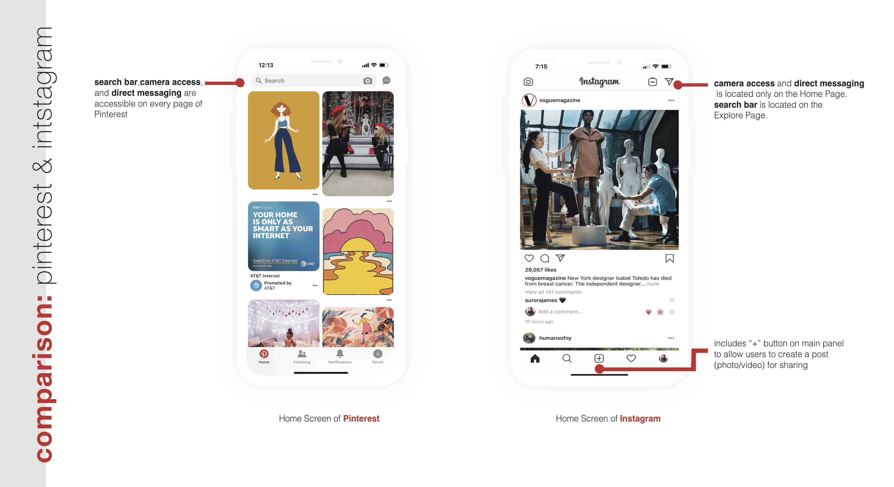
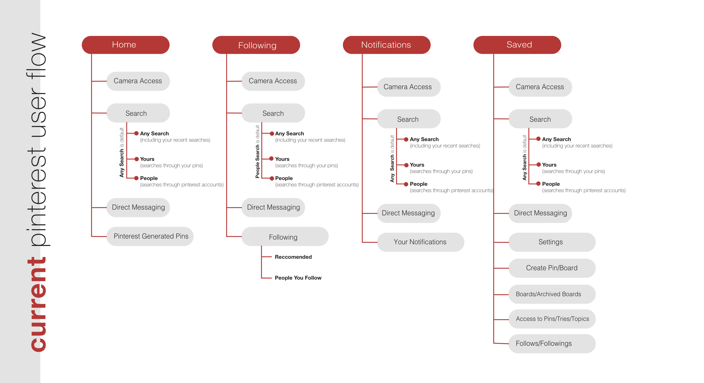
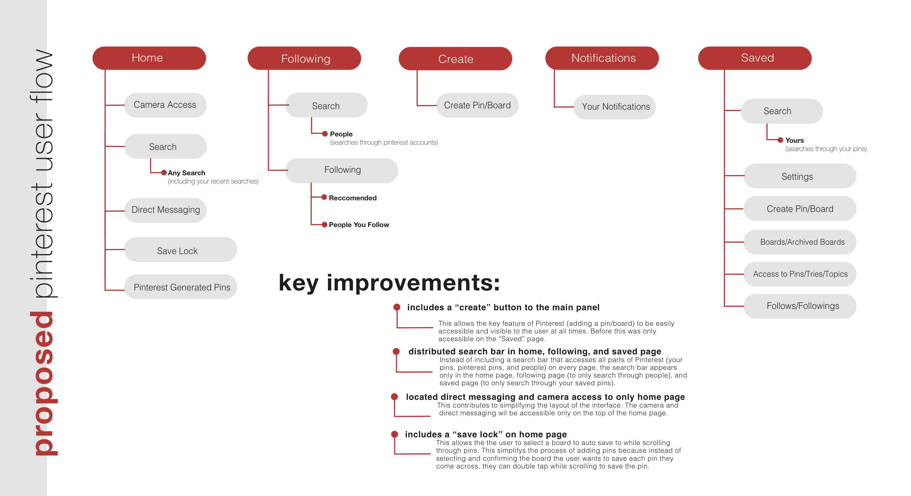
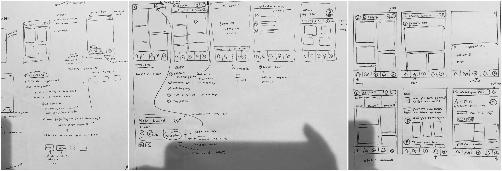

U I / U X
Pinterest Redesign
A redesign for Pinterest mobile app's interface with a focus on user flow and organization of features.
Role
- UI/UX
- Solo Project
Tools Used
- Adobe XD
- Adobe Photoshop
- Adobe Illustrator
Duration
- 1.5 weeks

O V E R V I E W
Background
Pinterest is a social application that allows users to browse and post images (known as “pins”). The ability to create, collaborate, and share allows users to endlessly discover and become inspired. The mission of Pinterest is to “help empower people to discover things they love and inspire them to go do those things in real life.
The Problem
While the app provides an abundant selection of pins and tools, the interface is lacking in organization and navigation. The many functions embedded in each main page are confusing and become hard to operate through instead of being helpful.
1
There are a lot of buttons on each page - It took time to click through each one to understand its purpose and some ended up having the same function.
2
There is a lack of direction on how to use the app - the intent of using Pinterest is to be able to create and share boards/pins, but only until you find the “+” button on the “Saved” page would you be able to create a board or pin.
3
There is also a repetitiveness of buttons on different pages. Is having the same button in multiple places helpful or hurtful for a user?
I D E A T I O N
Comparative Analysis
After playing around with Pinterest for a few days, I found that in many ways Pinterest is organized very similarly to the commonly used social app Instagram. One of the most noteable features of Instagram is its user friendly interface, so I decided to compare the two applications to identify what differences they have in their layout.
Right away, I noticed that having button to create content in the main bottom panel allowed users to directly access that function while at any place on the app. The apparency that comes from its location (center of the bottom panel) suggests its importance as well as it is the main function that will allow the user to create their own post and it is the most visible.
Another organizational element I saw that was different from Pinterest was that functions on Instagram do not overlap across pages. Each page has a specific purpose and the functions are distributed appropriately among them.
This leads us to the challenge of this project:
How can we restructure the organization of Pinterest’s features to simplify the process of adding/viewing pins?
Design Goals
1
Minimize the amount of functions on each main page.
2
Organize the functions on each page & establish a distinct purpose and flow for each page.
3
Update features and the aesthetic to simplify the process of adding pins as well as declutter the interface.
Solution
In order to both minimize the amount of functions on each page and organize the flow of each page so that each has a distinct purpose, reorganizing the user flow was my next step.


In the current Pinterest user flow, buttons repeat across all pages. Is this necessary?
When I am on a notifications page, should there be a search bar to search pins? When I am on the people page, would I need to access the camera?
I decided to distribute functions into the page that corresponds with its purpose. For example, on the ‘People’ page, the search bar should search through other users and on my Saved page, the search bar should search through my saved pins.
This not only organizes the layout but allows users to develop a routine for how they use the app knowing exactly where to find what instead of being able to access all search items (people, saved pins, and all pins) on every page.
I also wanted to add a “Create” button to the bottom panel to give that feature the most exposure. Since it is the most interactive function on Pinterest, its visibility is important for any type of user who is interested in Pinterest’s utilities.
A last feature I wanted to add to Pinterest’s app is a lock feature for when a user scrolls with a specific board they want to pin to in mind. I think this would be helpful to quickly add (by a double tap) a pin and continue scrolling without having to specify for each pin which board you would like to pin it to.

P R O T O T Y P E
Featured


Interactive Model
Click anywhere to interact with this prototype: